📡 Wireshark e Ataques de Interceptação
Explorando o Man in the Middle (MITM)
Introdução
No mundo da segurança da informação, entender como os ataques funcionam é fundamental para se defender. Um dos mais comuns é o Man in the Middle (MITM), onde um invasor se posiciona entre duas partes, interceptando, lendo ou alterando os dados.
O Wireshark, uma ferramenta legítima de análise, pode ser usada para inspecionar o tráfego capturado durante um ataque MITM.
Atenção: Este conteúdo é exclusivamente educacional, para estudo em ambientes controlados e autorizados.
O que é o Wireshark?
O Wireshark é um analisador de pacotes gratuito e de código aberto. Ele permite capturar, inspecionar e filtrar dados que trafegam em uma rede. É amplamente usado para:
- Diagnosticar problemas de rede.
- Analisar protocolos de comunicação.
- Monitorar tráfego suspeito.
- Investigar vazamentos de dados.
Como funciona um ataque MITM?
No ataque MITM, o invasor intercepta a comunicação entre duas partes. A forma mais comum em redes locais (LAN) é via ARP Spoofing:
- O atacante envia respostas ARP falsas para os dispositivos da rede.
- Estes dispositivos acreditam que o atacante é o gateway ou outro host.
- Todo o tráfego da vítima passa pelo atacante.
- O invasor pode apenas escutar (sniffing) ou modificar os dados.
Analisando um ataque MITM (Educacional)
Passo 1: Preparar o Ambiente
Coloque a máquina atacante e a vítima na mesma rede. Abra o Wireshark e selecione a interface de rede (ex: eth0).
Passo 2: Iniciar ARP Spoofing
Use uma ferramenta como `arpspoof`. Exemplo:
echo 1 > /proc/sys/net/ipv4/ip_forward
arpspoof -i eth0 -t [IP_VITIMA] [IP_GATEWAY]Passo 3: Capturar Pacotes
O Wireshark começará a capturar todo o tráfego da vítima. Use filtros para analisar:
httpftpdnsip.addr == [IP_VITIMA]
Exemplo Prático
Se a vítima acessar um site HTTP e fizer login, você poderá ver credenciais em texto claro nos pacotes HTTP POST.
Como se defender de ataques MITM?
-
🔐
Criptografia: Use sempre HTTPS, VPNs e outras formas de proteger dados em trânsito.
-
📶
Segmentação de rede: Separe dispositivos críticos em VLANs diferentes.
-
🔒
Detecção de spoofing: Ferramentas como ARPWatch ou IDS (Snort) podem alertar sobre anomalias.
-
🚫
Desabilitar tráfego inseguro: Bloqueie ou monitore protocolos inseguros como FTP e HTTP.
Conclusão
O Wireshark é essencial para administradores e profissionais de segurança. Em conjunto com técnicas como ARP Spoofing, é poderoso para entender como ocorrem os ataques MITM — e, mais importante, como preveni-los.
Aprender sobre esses ataques é o primeiro passo para construir defesas robustas. Lembre-se sempre de realizar experimentos apenas em ambientes de teste controlados e com permissão.